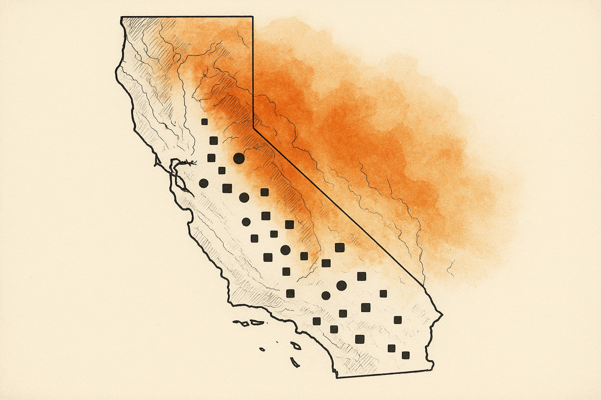
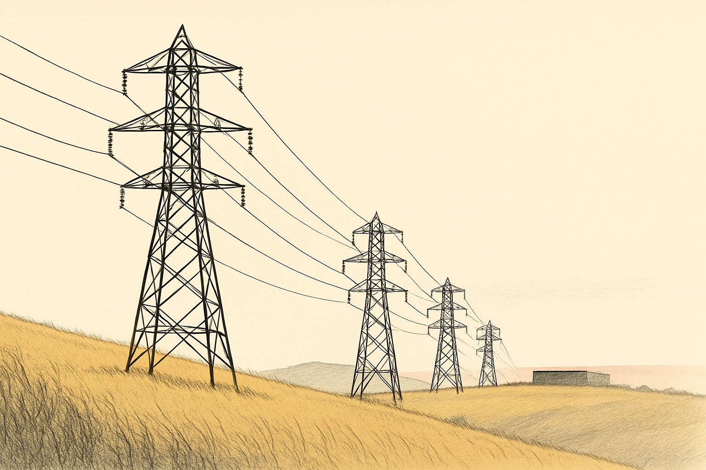

Latest · Grid & Wildfire Risk How Effective Is PSPS at Preventing Wildfires? June 11, 2026 Does shutting off the power actually prevent wildfires? A step-by-step causal analysis — why the headline numbers mislead, how far publicly available data can take us, and exactly what it would take to measure the real effect. ▶ Interactive slides ⇩ PDF slides
 Grid & Wildfire Risk · Series Part 1 Understanding the Fire Risk in California's Power Grid: Generation April 06, 2026 Part 1 of a series on California's energy grid and wildfire risk. A data-driven analysis of how California's 3,018 generators overlap with fire threat zones, historical fire perimeters, and fire weather patterns. ▶ Interactive slides ⇩ PDF slides
 Grid & Wildfire Risk How Much Fire Risk Is California Building? A Case Study of the Manning–Metcalf 500 kV Corridor March 04, 2026 A case study of the Manning–Metcalf 500 kV corridor and the data center transmission buildout ▶ Interactive slides ⇩ PDF slides
Grid & Wildfire Risk Understanding California's Power Shutoffs February 09, 2026 A data-driven look at who bears the burden, how long outages last, and whether the fire prevention strategy is working ▶ Interactive slides ⇩ PDF slides
Elections & Participation Does Subsidized College Make People Vote? A Causal Analysis with 16 Million Records January 19, 2026 How I linked 16.4 million financial aid applications to voter records to estimate the civic returns to tuition subsidies—and what the results mean for American democracy.